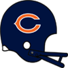
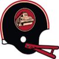

Season PredictionsThe sports journalists association has published the results of this year's division prediction polls among their twenty top sports journalists.
AFC West: Buffalo Bills with 11 votes (Runner up: Cincinnati Bengals with 5 votes)
AFC East: Baltimore Ravens with 10 votes (Runner up: London Monarchs with 8 votes)
NFC West: Detroit Lions with 12 votes (Runner up: Green Bay Packers with 8 votes)
NFC East: Atlanta Falcons with 9 votes (Runner up: Indianapolis Colts with 7 votes)Game of the Week: Cincinnati Bengals at Atlanta FalconsOur Expert Predictions:
Jeremy Piper : Cincinnati Bengals
The leadership on the Bengals is great. You look at guys like Dan Marino - QB and what he does for a team. Leadership like that helps you win games. They will put up a lot of points.
Mary Moore : Cincinnati Bengals
They might even blow them out.
Jim Nox : Atlanta Falcons
In this game, I see no way in which you can discount that the defense will struggle to counter Johnny Unitas - QB. Watch out for him.
Darren Francis : Atlanta Falcons
They field one of the most underestimated defenses.
A hidden gem? Smith, O. - SS has turned some heads at the training facility of the Atlanta Falcons. The undrafted rookie free agent has put together an astonishing training camp. Reports out of the camp suggest the coaches and fans are excited to see if he can continue his development. Smith, O. - SS has turned some heads at the training facility of the Atlanta Falcons. The undrafted rookie free agent has put together an astonishing training camp. Reports out of the camp suggest the coaches and fans are excited to see if he can continue his development.
A hidden gem? Basanez, B. - QB has turned some heads at the training facility of the Indianapolis Colts. The undrafted rookie free agent has put together an astonishing training camp. Reports out of the camp suggest the coaches and fans are excited to see if he can continue his development. Basanez, B. - QB has turned some heads at the training facility of the Indianapolis Colts. The undrafted rookie free agent has put together an astonishing training camp. Reports out of the camp suggest the coaches and fans are excited to see if he can continue his development.
Future star for London Monarchs? Young, S. - QB from London Monarchs has shown everyone at spring camp why they drafted him in round 1. Everyone, from coaches, to fans, to fellow players are gushing about the progress Young has made. Young, S. - QB from London Monarchs has shown everyone at spring camp why they drafted him in round 1. Everyone, from coaches, to fans, to fellow players are gushing about the progress Young has made.
Cincinnati Bengals fans are excited. News from the camp of Cincinnati Bengals has it that Addai, J. - RB has been blowing the minds of coaches and fans. Addai was expected to contribute early, but his development in camp has still been a pleasant surprise for everyone. News from the camp of Cincinnati Bengals has it that Addai, J. - RB has been blowing the minds of coaches and fans. Addai was expected to contribute early, but his development in camp has still been a pleasant surprise for everyone.
A hidden gem? Fuller, E. - RB has turned some heads at the training facility of the Buffalo Bills. The undrafted rookie free agent has put together an astonishing training camp. Reports out of the camp suggest the coaches and fans are excited to see if he can continue his development. Fuller, E. - RB has turned some heads at the training facility of the Buffalo Bills. The undrafted rookie free agent has put together an astonishing training camp. Reports out of the camp suggest the coaches and fans are excited to see if he can continue his development.
A hidden gem? Tuaolo, E. - DT has turned some heads at the training facility of the Oakland Raiders. The undrafted rookie free agent has put together an astonishing training camp. Reports out of the camp suggest the coaches and fans are excited to see if he can continue his development. Tuaolo, E. - DT has turned some heads at the training facility of the Oakland Raiders. The undrafted rookie free agent has put together an astonishing training camp. Reports out of the camp suggest the coaches and fans are excited to see if he can continue his development.
CB Jimmy Williams (N/A) has retired!CB Jimmy Williams (50 ovr) has retired after failing to get signed in free agency.T Wesley Britt (N/A) has retired!T Wesley Britt (58 ovr) has retired after failing to get signed in free agency.Post Free Agency RetirementsThe following players have retired after going unsigned through free agency:
RB Robert Lavette
RB Jerald Moore
RB Winslow Oliver
RB Reggie Brown
RB Marcus Holliday
G Jeff Buckey
G Terry Tausch
G Jorge Diaz
G Jim Mills
TE K.D. Dunn
TE Brian Roche
TE Jason Dunn
TE Travis Tucker
TE Keli McGregor
TE James McKeehan
TE Marco Battaglia
WR Bryan Still
WR Iheanyi Uwaezuoke
WR Frank Pokorny
WR Nilo Silvan
WR Freddie Solomon
WR Willie Drewrey
WR Calvin Muhammad
WR Jahine Arnold
WR Byron Walker
CB Ronnie Burgess
CB Wayne Davis
CB Johnnie Poe
CB Chris Martin CB
CB Lee Cole
CB Dorian Brew
CB Rashid Gayle
CB Lamar Lyons
CB John Holt
CB Donnie Elder
CB Jerry Wilson
LB Lenoy Jones
LB Michael Lowery
LB Sammie Burroughs
LB Sean Moran
LB Joe Cummings
LB Carl Zander
LB Terry Killens
LB Tom Tumulty
LB Reggie Brown
LB Doug Colman
LB Mark Fellows
LB Randy Scott
LB Tom Dinkel
DT Ronnie Washington
DT Michael Samson
DT Manu Tuiasosopo
DT James Manley
DT Tim Morabito
DT Tom Baldwin
DT David Ponder
DT George Little
DT Dean Hamel
DT Tony Degrate
DT Joe Drake
DE Elliott Fortune
DE Mark Mullaney
DE Reggie Doss
DE Ron Faurot
DE Lance Johnstone
DE Jumpy Geathers
DE Keith Gary
FS Mike Robinson
FS Liffort Hobley
FS Don Bessillieu
FS Je'Rod Cherry
FS Frank Wattelet
FS Rick Sanford
SS Don Anderson
SS D.D. Hoggard
SS Craig Curry
SS Allen Lyday
SS Brad FordT Rod Jones (N/A) has retired!T Rod Jones (62 ovr) has retired after failing to get signed in free agency.WR Paul Warfield (IND) goes #1 overall!NEW YORK -- The Indianapolis Colts drafted Paul Warfield #1 overall in the 1987 draft. The 6' 0" WR fits the team's needs perfectly. Said Colts general manager: "It's up to us to develop him and get good players around him."
"The great thing about the game of football is, it's a team game," Warfield said on a conference call. "I'm just going to be one piece of the puzzle."Moore and Nox Mock DraftPick 1: New York Giants
Larry Moore: Jay Cutler - QB
Sportsmanship, love of the sport and respect, is what you get with him. Plays with intelligence. The ball leaves his hand with good speed. This guy is available. This guy fills a need. They have to take him. It makes so much sense.
Jim Nox: Bobby Boucher - LB
Wraps up tackles like a veteran. Coaches love this. You can put this guy in there, and no one will run his way. This young man can hold his own in the weight room. And he is strong enough to hold his own on the field as well. Offenses will need to keep tabs on him. He will close down fairly quickly if left unblocked. Fits nicely with their needs. Fits nicely with the draft spot. Getting it right is important with these early picks. This guy is right.
Pick 2: Washington [Redacted]s
Larry Moore: Emlen Tunnell - SS
Here is a young man who is legitimately explosive. He will go sideline to sideline. YOu really need that kind of mobility at the Strong Safety position. Consistently takes down ball carrier on tackles. Pretty bright kid. They will be running to the podium for this one.
Jim Nox: Paul Warfield - WR
Throw the ball up, and this kid will come down with it, even if he is not even on the field. Sufficient speed to run deep routes, and enough to make him tough to catch if you lose sight of him. They need players at the position, and good ones at that. He fits the bill, he is worth the pick. End of story.
Pick 3: New York Jets
Larry Moore: Paul Warfield - WR
If you check his tape you will see him make some truly incredible catches. Nice speed. Will keep defenses honest. They should not be afraid to fill a need here. He will start day one. Quality pick right here.
Jim Nox: Emlen Tunnell - SS
Comes down from his safety position at blazing speed on blitzes. Runs well in coverage, even when required to run with faster receivers. A great tackler. Consistent. Can be relied upon to understand his role on any given play. Fans, coaches, and teammates alike will be ecstatic to get him on the team. He fits what they need, he is such a great talent. Everything lines up.
Pick 4: Minnesota Vikings
Larry Moore: Bobby Boucher - LB
Linebackers must tackle. This guy is not only superb at it. He also hits cleanly and with great force. Coaches and players alike respect that. Can bull rush smaller Tight Ends and Fullbacks when blitzing. Coaches love this kind on their Linebackers. People watching his tape often do not notice his speed. It is not something that jumps out at you, but he is pretty fast. He fills a hole at the position. Blue-chip player. Will fit right in and start right away. Love it.
Jim Nox: Devin Hester - WR
Here is a guy who could legitimately run track as a pro. Opponents better nump him at the line. Great balance and body control. Reliably makes the right decision on the field. He can do what they want. He will deliver results early. He fits a need. End of story.
Pick 5: Miami Dolphins
Larry Moore: A.J. Hawk - LB
His leadership is through the roof. He is on the frontline, always. He helps everyone get in the right position, making the team run as a well oiled machine. Sportsmanship, love of the sport and respect, is what you get with him. Wraps up well when tackling. He brings nice strength to the table. This is important because often his role will to keep contain. You cannot do that if you are on your back. Is speedy enough to stay on the field in passing situations. Are there other guys worth picking here? Sure, but none of them fit this well with what they need, and he is a solid talent.
Jim Nox: A.J. Hawk - LB
Need a leader? He is your guy. I want this kid on my team. He understands his role on the field, and how it fits in with what everyone else is doing. Respected for his good behavior on the field. He has a well developed tackling technique. Coaches like that. Teams are looking for players who will not break contain. This young man is strong enough to stay on his feet against grown men on the offensive line. Offenses will need to keep tabs on him. He will close down fairly quickly if left unblocked. Do not fret. You need him, fans love him. Surefire pick.
Pick 6: Kansas City Chiefs
Larry Moore: Andrew Whitworth - T
Intangibles, leadership, what's not to love? This kid breeds synergy, teams play better when he is on the field. He has the strength to throw defenders around, and not just the linebackers. This is a guy who is already a pretty good blocker in the run game. He has shown in college he can hold his own in pass blocking. He keeps good leverage and will only get better once the coaches get their hands on him. They need playmakers at this position. This is what they are getting here. Solid pick.
Jim Nox: Andrew Whitworth - T
This is a player who takes the lead. Raised to know the value of teamwork. He will have a legit shot at winning bets arm wrestling the veterans. The kind of strength this kid has earns a lot of respect in a locker room. Run blocking is very different when facing college kids than the full-grown men in the pros. This kid has the skills to do the latter. Something that scouts highight is how well he pass blocks. You do not pick him this high if he could not protect the QB. He fills a need for them. They will be happy to get him.
Pick 7: Indianapolis Colts
Larry Moore: Jahri Evans - G
Incredibly strength and physique. Teams are always looking for run blockers with a mean streak. This kid fit that bill. He run blocks like a beast. Pretty clever. Rock solid player is just what they need. A great fit here, both in terms of need and quality.
Jim Nox: Jahri Evans - G
This is a young man who will bench press a Defensive Tackle, and not a small one! Superb in the run game. Takes on defenders with tenacity and finishes his blocks. Reacts intelligently on the field. Might not be what fans want, but there is a reason people are getting paid to make these decisions. This is a rock solid pick, and he fits what they are looking for. Fans will come around quickly once they see him play.
Pick 8: Green Bay Packers
Larry Moore: Mario Williams - DE
This kid is not afraid to work hard. Known for helping out teammates, if they hit a rough patch, whether it is on the field or in their personal lives. He has sufficient strength to not get bulllied on run plays. Not a topnotch forty time, but not bad either. Has enough quickness in his first step to do everything you ask of him. You want your Linebackers to tackle. This guy is pretty good at that. Fill a need, get a quality player, everyone wins! He will fit right in with the pros.
Jim Nox: Donald Penn - T
He has sufficient strength to have a chance against grown men on the defensive line. A tenacious blocker in the running game. He will open lanes. Needless to say this appeals to a lot of teams. Shows good understanding of his assignments on the field. Might not be what fans want, but there is a reason people are getting paid to make these decisions. This is a rock solid pick, and he fits what they are looking for. Fans will come around quickly once they see him play.
Pick 9: Seattle Seahawks
Larry Moore: Donald Penn - T
The muscles on this kid should allow him to hold his own against pro competition. Great blocking skills. He has that tenacity, and will be blowing guys of the line. Clever young man as wellFits the bill, great quality pick, and fills a soft spot on the roster. They should have no qualms here, run to the podium and get your man.
Jim Nox: Mario Williams - DE
The guy has his head on straight. This is a kid who really contributes to the team spirit and the social cohesiveness on the team. The muscles on this kid allows him to shed blocks and keep contain. Nice speed for a Defensive End. Enough to keep contain and get sacks. Pretty good tackling fundamentals. That is something coaches love. Fits the bill, great quality pick, and fills a soft spot on the roster. They should have no qualms here, run to the podium and get your man.
Pick 10: Chicago Bears
Larry Moore: Devin Hester - WR
Here is a kid that allows you to go over the top whenever you want to. His speed will really open up the running game. Great balance. Runs good routes, and that is really something coaches are looking for in kids. Can be relied upon to understand his role on any given play. Fits the bill, great quality pick, and fills a soft spot on the roster. They should have no qualms here, run to the podium and get your man.
Jim Nox: Tommy Nobis - LB
The impact on his tackles strikes awe in spectators. He is sure to produce some highlight reel takedowns in his career. Has sufficient strength to play with the big boys in the pros. Will never become a speed rush specialist, but has sufficient speed to become a prototype Defensive End. Blue-chip player. Exactly what they look for. Add a young talent to a roster thin at the position, a great fit.
Offseason Team Needs with Jeremy PiperWith a new offseason under way, some rosters are in good shape. However, other teams have big needs to address this offseason. Your always trusty Jeremy Piper here brings you a quick glance at the teams with work to do. Whether they fill their needs in the draft or with veterans in free agency remains to be seen.
Here we go:
Kansas City Chiefs: QB G T WR CB LB DT DE
Oakland Raiders: G T TE WR CB LB DE
Seattle Seahawks: QB RB G T C TE WR CB LB DT DE FS SS
Buffalo Bills: T C WR CB DE SS
Cincinnati Bengals: T C WR CB LB DT SS
Miami Dolphins: CB LB
New York Jets: QB RB G T C TE WR CB LB DT DE FS SS
London Monarchs: RB TE CB DE
Providence Steam Rollers: QB WR CB LB DT DE FS
Baltimore Ravens: T C TE CB LB
Green Bay Packers: G T TE DE
Chicago Bears: G WR CB LB
Minnesota Vikings: G WR CB LB DT
Detroit Lions: QB
San Francisco 49ers: G LB DT FS
New York Giants: QB G T CB LB DT
Indianapolis Colts: G LB
Atlanta Falcons: G T TE CB LB DT FS SS
Tampa Bay Buccaneers: TE LB DT SS
Washington [Redacted]s: G TE WR CB LB DT SS
Draft Order: New York Giants own first overall.Pick 1: New York Giants
Pick 2: Washington [Redacted]s
Pick 3: New York Jets
Pick 4: Minnesota Vikings
Pick 5: Miami Dolphins
Pick 6: Kansas City Chiefs
Pick 7: Indianapolis Colts
Pick 8: Green Bay Packers
Pick 9: Seattle Seahawks
Pick 10: Chicago Bears
Pick 11: Buffalo Bills
Pick 12: Baltimore Ravens
Pick 13: Green Bay Packers (from Tampa Bay Buccaneers)
Pick 14: San Francisco 49ers
Pick 15: Providence Steam Rollers
Pick 16: London Monarchs
Pick 17: Buffalo Bills (from Oakland Raiders)
Pick 18: Chicago Bears (from Detroit Lions)
Pick 19: Buffalo Bills (from Cincinnati Bengals)
Pick 20: London Monarchs (from Atlanta Falcons)
Coaching Carousel Predictions.The offseason is upon us and that means teams are shaking up their coaching staffs. This means that we get to take our annual look at coordinators who could make the leap to become head coaches, and the teams who are likely to poach them.
The prime candidates identified by our experts are:
Bob Zemen - Defensive Coordinator - Oakland Raiders
Tom Flores - Offensive Coordinator - Oakland Raiders
Pete Carroll - Defensive Coordinator - London Monarchs
Mike Shanahan - Offensive Coordinator - London Monarchs
Darryl Rogers - Defensive Coordinator - Detroit Lions
Bob Baker - Offensive Coordinator - Detroit Lions
Larry Peccatiello - Defensive Coordinator - Washington [Redacted]s
Joe Gibbs - Offensive Coordinator - Washington [Redacted]s
Lawrence Phillips - RB under criminal investigation!It looks like the off field troubles of Lawrence Phillips have finally caught up with him. Local news reports that a criminal investigation has been launched looking into previous criminal misconduct of Phillips. The league has reiterated that standard policy is to await results from the criminal investigation before deciding on any punishment.
The Packers have yet to comment on the situation.Dexter Manley - DE under criminal investigation!It looks like the off field troubles of Dexter Manley have finally caught up with him. Local news reports that a criminal investigation has been launched looking into previous criminal misconduct of Manley. The league has reiterated that standard policy is to await results from the criminal investigation before deciding on any punishment.
The Giants have yet to comment on the situation.Other retirements
QB Paul McDonald (74 ovr) : Career stats: 0/0, 0 yds, 0 TD
QB Steve Pelluer (70 ovr) : Career stats: 0/0, 0 yds, 0 TD
QB Bobby Hoying (63 ovr) : Career stats: 0/0, 0 yds, 0 TD
QB Rusty Hilger (63 ovr) : Career stats: 0/0, 0 yds, 0 TD
QB Steve Stenstrom (59 ovr) : Career stats: 0/0, 0 yds, 0 TD
QB Scott Campbell (55 ovr) : Career stats: 0/0, 0 yds, 0 TD
RB Rick Kane (70 ovr) : Career stats: 0 att, 0 yds, 0 TD
RB Stanford Jennings (68 ovr) : Career stats: 0 att, 0 yds, 0 TD
RB Oscar Gray (68 ovr) : Career stats: 0 att, 0 yds, 0 TD
RB Rich Erenberg (67 ovr) : Career stats: 0 att, 0 yds, 0 TD
RB Arnold Mickens (66 ovr) : Career stats: 0 att, 0 yds, 0 TD
RB Ricky Whittle (65 ovr) : Career stats: 0 att, 0 yds, 0 TD
RB Mike Archie (65 ovr) : Career stats: 0 att, 0 yds, 0 TD
RB Freddie Bradley (65 ovr) : Career stats: 0 att, 0 yds, 0 TD
RB Robert Walker (63 ovr) : Career stats: 0 att, 0 yds, 0 TD
RB Tyrone Anthony (61 ovr) : Career stats: 0 att, 0 yds, 0 TD
RB Jerone Davison (60 ovr) : Career stats: 0 att, 0 yds, 0 TD
RB Terry Richardson (59 ovr) : Career stats: 0 att, 0 yds, 0 TD
RB Curtis Adams (59 ovr) : Career stats: 0 att, 0 yds, 0 TD
RB Marrio Grier (58 ovr) : Career stats: 0 att, 0 yds, 0 TD
RB Jon Witman (57 ovr) : Career stats: 0 att, 0 yds, 0 TD
RB Jerris McPhail (57 ovr) : Career stats: 0 att, 0 yds, 0 TD
RB Scott Greene (57 ovr) : Career stats: 0 att, 0 yds, 0 TD
RB Roger Graham (56 ovr) : Career stats: 0 att, 0 yds, 0 TD
RB Carey Bender (55 ovr) : Career stats: 0 att, 0 yds, 0 TD
RB Kevin Bouie (55 ovr) : Career stats: 0 att, 0 yds, 0 TD
RB Derrick Harris (54 ovr) : Career stats: 0 att, 0 yds, 0 TD
FB Robert Staten (44 ovr) : Career stats: 0 att, 0 yds, 0 TD
FB Dou Innocent (41 ovr) : Career stats: 0 att, 0 yds, 0 TD
FB E.J. Jones (39 ovr) : Career stats: 0 att, 0 yds, 0 TD
FB Jason Bratton (31 ovr) : Career stats: 0 att, 0 yds, 0 TD
FB Lee Rouson (31 ovr) : Career stats: 0 att, 0 yds, 0 TD
G John Ayers (66 ovr) : Career stats: 54 Pancakes
G Mike Verstegen (59 ovr) : Career stats: 0 Pancakes
G Bob Olderman (58 ovr) : Career stats: 0 Pancakes
G Adam Schreiber (58 ovr) : Career stats: 0 Pancakes
G Sale Isaia (57 ovr) : Career stats: 0 Pancakes
G Joel Crisman (57 ovr) : Career stats: 0 Pancakes
G Mike Kelley (57 ovr) : Career stats: 0 Pancakes
G Tim Hanshaw (56 ovr) : Career stats: 0 Pancakes
G Brian Blados (56 ovr) : Career stats: 0 Pancakes
G David Jordan (56 ovr) : Career stats: 0 Pancakes
G Chris Harrison (55 ovr) : Career stats: 0 Pancakes
G Steve Hardin (54 ovr) : Career stats: 0 Pancakes
G Troy Sienkiewicz (53 ovr) : Career stats: 0 Pancakes
T Ray Pinney (65 ovr) : Career stats: 0 Pancakes
T Jerry Reynolds (62 ovr) : Career stats: 0 Pancakes
T Marcus Spears (61 ovr) : Career stats: 0 Pancakes
T Shahriar Pourdanesh (60 ovr) : Career stats: 0 Pancakes
T Greg Christy (57 ovr) : Career stats: 0 Pancakes
T Tom Andrews (56 ovr) : Career stats: 0 Pancakes
T Dale Hellestrae (52 ovr) : Career stats: 0 Pancakes
T Roger Caron (50 ovr) : Career stats: 0 Pancakes
C Steve Wilson (71 ovr) : Career stats: 15 Pancakes
C Bryan Stoltenberg (62 ovr) : Career stats: 0 Pancakes
C Morris Unutoa (61 ovr) : Career stats: 0 Pancakes
C Conrad Goode (58 ovr) : Career stats: 0 Pancakes
C Rob Davis (56 ovr) : Career stats: 0 Pancakes
C Winford Hood (56 ovr) : Career stats: 0 Pancakes
C Glenn Hyde (52 ovr) : Career stats: 0 Pancakes
TE Russ Francis (79 ovr) : Career stats: 62 rec, 613 yds, 2 TD
TE Mike Mularkey (67 ovr) : Career stats: 0 rec, 0 yds, 0 TD
TE Johnny McWilliams (59 ovr) : Career stats: 0 rec, 0 yds, 0 TD
TE Brian Saxton (59 ovr) : Career stats: 0 rec, 0 yds, 0 TD
TE Henry Lusk (57 ovr) : Career stats: 0 rec, 0 yds, 0 TD
TE Don Kern (57 ovr) : Career stats: 0 rec, 0 yds, 0 TD
TE Todd Fowler (56 ovr) : Career stats: 0 rec, 0 yds, 0 TD
TE Hunter Goodwin (54 ovr) : Career stats: 0 rec, 0 yds, 0 TD
TE Billy Griggs (54 ovr) : Career stats: 0 rec, 0 yds, 0 TD
TE Steve Brooks (53 ovr) : Career stats: 0 rec, 0 yds, 0 TD
TE Lovett Purnell (53 ovr) : Career stats: 0 rec, 0 yds, 0 TD
TE Marcus Hinton (53 ovr) : Career stats: 0 rec, 0 yds, 0 TD
TE Mike Barber (51 ovr) : Career stats: 0 rec, 0 yds, 0 TD
TE Scott Slutzker (50 ovr) : Career stats: 0 rec, 0 yds, 0 TD
TE Tony Johnson (50 ovr) : Career stats: 0 rec, 0 yds, 0 TD
TE John Goode (50 ovr) : Career stats: 0 rec, 0 yds, 0 TD
TE Willy Tate (49 ovr) : Career stats: 0 rec, 0 yds, 0 TD
WR Leonard Thompson (65 ovr) : Career stats: 0 rec, 0 yds, 0 TD
WR Cliff Branch (64 ovr) : Career stats: 8 rec, 63 yds, 0 TD
WR Marvin Marshall (62 ovr) : Career stats: 0 rec, 0 yds, 0 TD
WR Karl Williams (61 ovr) : Career stats: 0 rec, 0 yds, 0 TD
WR Jack Jackson (60 ovr) : Career stats: 0 rec, 0 yds, 0 TD
WR Ray Ethridge (60 ovr) : Career stats: 0 rec, 0 yds, 0 TD
WR Kendricke Bullard (59 ovr) : Career stats: 0 rec, 0 yds, 0 TD
WR Charlie Jones (59 ovr) : Career stats: 0 rec, 0 yds, 0 TD
WR Dietrich Jells (59 ovr) : Career stats: 0 rec, 0 yds, 0 TD
WR Butch Johnson (58 ovr) : Career stats: 9 rec, 99 yds, 0 TD
WR Kenny Shedd (58 ovr) : Career stats: 0 rec, 0 yds, 0 TD
WR Clarence Weathers (58 ovr) : Career stats: 0 rec, 0 yds, 0 TD
WR Brian Brennan (58 ovr) : Career stats: 0 rec, 0 yds, 0 TD
WR James Hundon (56 ovr) : Career stats: 0 rec, 0 yds, 0 TD
WR Mark Harris (56 ovr) : Career stats: 0 rec, 0 yds, 0 TD
WR Ricky Nichols (56 ovr) : Career stats: 0 rec, 0 yds, 0 TD
WR Stacy Robinson (56 ovr) : Career stats: 0 rec, 0 yds, 0 TD
WR Eric Richardson (56 ovr) : Career stats: 0 rec, 0 yds, 0 TD
WR Billy Williams (55 ovr) : Career stats: 0 rec, 0 yds, 0 TD
WR Larry Ryans (55 ovr) : Career stats: 0 rec, 0 yds, 0 TD
WR Karl Powe (55 ovr) : Career stats: 0 rec, 0 yds, 0 TD
WR Phillip Riley (53 ovr) : Career stats: 0 rec, 0 yds, 0 TD
WR Kevin Jordan (52 ovr) : Career stats: 0 rec, 0 yds, 0 TD
WR Mike Akiu (52 ovr) : Career stats: 0 rec, 0 yds, 0 TD
WR Phil Freeman (52 ovr) : Career stats: 0 rec, 0 yds, 0 TD
WR Jimmy Teal (51 ovr) : Career stats: 0 rec, 0 yds, 0 TD
WR Freddie Solomon Jr (50 ovr) : Career stats: 0 rec, 0 yds, 0 TD
WR Carl Roaches (49 ovr) : Career stats: 0 rec, 0 yds, 0 TD
CB Jeff Fuller (59 ovr) : Career stats:
CB Tory Nixon (58 ovr) : Career stats:
CB Richard Woodley (57 ovr) : Career stats:
CB Dave Edwards (57 ovr) : Career stats:
CB Dexter Seigler (52 ovr) : Career stats:
CB Chris Rockins (52 ovr) : Career stats:
CB Kerry Glenn (52 ovr) : Career stats:
CB Emmanuel McDaniel (51 ovr) : Career stats:
CB Herman O'Berry (51 ovr) : Career stats:
CB Rod McSwain (51 ovr) : Career stats:
CB Daniel Hunter (49 ovr) : Career stats:
CB Leonard Coleman (48 ovr) : Career stats:
LB Glenn Cameron (71 ovr) : Career stats: 21 Tck, 1 Sck
LB Cliff Thrift (64 ovr) : Career stats:
LB Ken Jolly (63 ovr) : Career stats:
LB Daved Benefield (61 ovr) : Career stats:
LB Ben Hanks (61 ovr) : Career stats:
LB Phil Yeboah-Kodie (59 ovr) : Career stats:
LB Steve DeOssie (59 ovr) : Career stats:
LB Sanders Shiver (58 ovr) : Career stats: 1 Tck
LB O.J. Brigance (57 ovr) : Career stats:
LB Steve Conley (56 ovr) : Career stats:
LB Moses Regular (56 ovr) : Career stats:
LB Troy Dumas (55 ovr) : Career stats:
LB James Logan (55 ovr) : Career stats:
LB Hal Garner (55 ovr) : Career stats:
LB Percell Gaskins (53 ovr) : Career stats:
LB Jesse Penn (53 ovr) : Career stats:
LB Craig Sauer (52 ovr) : Career stats:
LB Eric Unverzagt (52 ovr) : Career stats:
DT Mike Ulufale (53 ovr) : Career stats:
DT Mark Catano (53 ovr) : Career stats:
DT Tom Briehl (50 ovr) : Career stats:
DT June James (49 ovr) : Career stats:
DT Mitch Willis (48 ovr) : Career stats:
DT Eric Wilson (46 ovr) : Career stats:
DT Jason Maniecki (45 ovr) : Career stats:
DE Kim Bokamper (68 ovr) : Career stats: 19 Tck
DE Julius Adams (61 ovr) : Career stats:
DE James Roberson (61 ovr) : Career stats:
DE Keith Washington (59 ovr) : Career stats:
DE Eddie Edwards (59 ovr) : Career stats: 3 Tck, 1 Sck
DE Israel Ifeanyi (58 ovr) : Career stats:
DE Pete Koch (58 ovr) : Career stats:
DE Daryl Price (56 ovr) : Career stats:
DE Bryant Mix (55 ovr) : Career stats:
DE Vernon Edwards (54 ovr) : Career stats:
DE Robert Smith (54 ovr) : Career stats:
DE Carl Reeves (52 ovr) : Career stats:
DE Byron Smith (46 ovr) : Career stats:
FS Jeffery Dale (65 ovr) : Career stats:
FS Eric Sutton (64 ovr) : Career stats:
FS Tim Fox (62 ovr) : Career stats:
FS Chris Hayes (60 ovr) : Career stats:
FS Sean Boyd (60 ovr) : Career stats:
FS Chris Johnson (58 ovr) : Career stats:
FS Rodney Bellinger (58 ovr) : Career stats:
FS William Strong (56 ovr) : Career stats:
FS Mike Smith (55 ovr) : Career stats:
FS Victor Scott (55 ovr) : Career stats:
FS George Radachowsky (54 ovr) : Career stats:
FS T.J. Cunningham (53 ovr) : Career stats:
FS Daryll Jones (51 ovr) : Career stats:
SS Tony Peters (68 ovr) : Career stats: 50 Tck, 1 Sck, 2 FF
SS Stacey Toran (67 ovr) : Career stats:
SS Issiac Holt (63 ovr) : Career stats:
SS Reggie Rusk (59 ovr) : Career stats:
SS Steve Freeman (58 ovr) : Career stats:
SS Marlon Forbes (55 ovr) : Career stats:
SS Arnold Brown (54 ovr) : Career stats:
SS Chuck Clanton (52 ovr) : Career stats:
SS Chris Brown (50 ovr) : Career stats:
P Josh Miller (57 ovr) : Career stats: 0 yards, 0 inside 20
P Leo Araguz (53 ovr) : Career stats: 0 yards, 0 inside 20
P Mike Saxon (53 ovr) : Career stats: 0 yards, 0 inside 20
P Chris Norman (51 ovr) : Career stats: 0 yards, 0 inside 20
WR Henry Marshall (N/A) has retired!The N/A' WR Henry Marshall has retired after 2 seasons. His presence in the locker room and on the field will be sorely missed.
He finished his career with 18 rec, 187 yds, 2 TDG Ken Huff (N/A) has retired!The N/A' G Ken Huff has retired after 2 seasons. His presence in the locker room and on the field will be sorely missed.
He finished his career with 17 PancakesFS Curtis Jordan (N/A) has retired!The N/A' FS Curtis Jordan has retired after 2 seasons. His presence in the locker room and on the field will be sorely missed.
He finished his career with 5 Tck, 2 IntQB Richard Todd (N/A) has retired!The N/A' QB Richard Todd has retired after 2 seasons. His presence in the locker room and on the field will be sorely missed.
He finished his career with 3/9, 26 yds, 0 TDQB Joe Ferguson (N/A) has retired!The N/A' QB Joe Ferguson has retired after 2 seasons. His presence in the locker room and on the field will be sorely missed.
He finished his career with 19/31, 257 yds, 2 TDT Matt Herkenhoff (N/A) has retired!The N/A' T Matt Herkenhoff has retired after 2 seasons. His presence in the locker room and on the field will be sorely missed.
He finished his career with 2 PancakesSS Larry Braziel (N/A) has retired!The N/A' SS Larry Braziel has retired after 2 seasons. His presence in the locker room and on the field will be sorely missed.
He finished his career with 72 Tck, 1 IntSS Lee Nelson (N/A) has retired!The N/A' SS Lee Nelson has retired after 2 seasons. His presence in the locker room and on the field will be sorely missed.
He finished his career with 123 Tck, 3 Sck, 2 FF, 1 FRRB Wilbert Montgomery (N/A) has retired!The N/A' RB Wilbert Montgomery has retired after 2 seasons. His presence in the locker room and on the field will be sorely missed.
He finished his career with 217 att, 934 yds, 4 TD, 6 rec, 86 yds, 0 TDP Pat McInally (N/A) has retired!The N/A' P Pat McInally has retired after 2 seasons. His presence in the locker room and on the field will be sorely missed.
He finished his career with 6311 yards, 53 inside 20LB Reggie Williams (N/A) has retired!The N/A' LB Reggie Williams has retired after 2 seasons. His presence in the locker room and on the field will be sorely missed.
He finished his career with 103 Tck, 2 FF, 1 FRLB Tom Howard (N/A) has retired!The N/A' LB Tom Howard has retired after 2 seasons. His presence in the locker room and on the field will be sorely missed.
He finished his career with 172 Tck, 8 Sck, 1 Int, 2 Sfty, 3 FF, 2 FRQB Ron Jaworski (N/A) has retired!The N/A' QB Ron Jaworski has retired after 2 seasons. His presence in the locker room and on the field will be sorely missed.
He finished his career with 457/719, 4489 yds, 24 TDG Dennis Harrah (N/A) has retired!The N/A' G Dennis Harrah has retired after 2 seasons. His presence in the locker room and on the field will be sorely missed.
He finished his career with 98 PancakesQB Phil Simms (WAS) has retired! The Washington [Redacted]s' QB Phil Simms has retired after 2 seasons. His presence in the locker room and on the field will be sorely missed. The Washington [Redacted]s' QB Phil Simms has retired after 2 seasons. His presence in the locker room and on the field will be sorely missed.
He finished his career with 199/306, 1881 yds, 9 TD
RB Earl Campbell (WAS) has retired!The Washington [Redacted]s' RB Earl Campbell has retired after 2 seasons. His presence in the locker room and on the field will be sorely missed.
He finished his career with 129 att, 528 yds, 13 TD, 8 rec, 52 yds, 0 TDT Mike Wilson (WAS) has retired!The Washington [Redacted]s' T Mike Wilson has retired after 2 seasons. His presence in the locker room and on the field will be sorely missed.
He finished his career with 154 PancakesDT John Dutton (TB) has retired! The Tampa Bay Buccaneers' DT John Dutton has retired after 2 seasons. His presence in the locker room and on the field will be sorely missed. The Tampa Bay Buccaneers' DT John Dutton has retired after 2 seasons. His presence in the locker room and on the field will be sorely missed.
He finished his career with 41 Tck, 7 Sck, 2 FF, 1 FR
SS Donnie Shell (TB) has retired!The Tampa Bay Buccaneers' SS Donnie Shell has retired after 2 seasons. His presence in the locker room and on the field will be sorely missed.
He finished his career with 171 Tck, 8 Sck, 1 Int, 1 Def TD, 3 FF, 2 FRP Jeff West (TB) has retired!The Tampa Bay Buccaneers' P Jeff West has retired after 2 seasons. His presence in the locker room and on the field will be sorely missed.
He finished his career with 8577 yards, 68 inside 20LB Harry Carson (ATL) has retired!The Atlanta Falcons' LB Harry Carson has retired after 2 seasons. His presence in the locker room and on the field will be sorely missed.
He finished his career with 280 Tck, 2 Sck, 1 Int, 3 FF, 2 FRRB Charles White (NYG) has retired!The New York Giants' RB Charles White has retired after 2 seasons. His presence in the locker room and on the field will be sorely missed.
He finished his career with 379 att, 976 yds, 5 TD, 6 rec, 56 yds, 0 TDG Joe DeLamielleure (MIN) has retired! The Minnesota Vikings' G Joe DeLamielleure has retired after 2 seasons. His presence in the locker room and on the field will be sorely missed. The Minnesota Vikings' G Joe DeLamielleure has retired after 2 seasons. His presence in the locker room and on the field will be sorely missed.
He finished his career with 77 Pancakes
WR Stanley Morgan (MIN) has retired!The Minnesota Vikings' WR Stanley Morgan has retired after 2 seasons. His presence in the locker room and on the field will be sorely missed.
He finished his career with 117 rec, 1126 yds, 7 TDLB Linden King (CHI) has retired!The Chicago Bears' LB Linden King has retired after 2 seasons. His presence in the locker room and on the field will be sorely missed.
He finished his career with 249 Tck, 13 Sck, 1 Int, 4 FF, 1 FRRB Mosi Tatupu (GB) has retired! The Green Bay Packers' RB Mosi Tatupu has retired after 2 seasons. His presence in the locker room and on the field will be sorely missed. The Green Bay Packers' RB Mosi Tatupu has retired after 2 seasons. His presence in the locker room and on the field will be sorely missed.
He finished his career with 2 att, 5 yds, 0 TD
DT Derland Moore (GB) has retired!The Green Bay Packers' DT Derland Moore has retired after 2 seasons. His presence in the locker room and on the field will be sorely missed.
He finished his career with 50 Tck, 5 Sck, 1 FFLB Kurt Allerman (PRO) has retired!The Providence Steam Rollers' LB Kurt Allerman has retired after 2 seasons. His presence in the locker room and on the field will be sorely missed.
He finished his career with 167 Tck, 3 Sck, 1 Int, 2 FFCB Lester Hayes (LON) has retired!The London Monarchs' CB Lester Hayes has retired after 2 seasons. His presence in the locker room and on the field will be sorely missed.
He finished his career with 142 Tck, 3 Int, 1 Def TD, 3 FFRB Tony Dorsett (LON) has retired!The London Monarchs' RB Tony Dorsett has retired after 2 seasons. His presence in the locker room and on the field will be sorely missed.
He finished his career with 475 att, 2326 yds, 16 TD, 55 rec, 485 yds, 3 TDT Billy Shields (BUF) has retired!The Buffalo Bills' T Billy Shields has retired after 2 seasons. His presence in the locker room and on the field will be sorely missed.
He finished his career with 74 PancakesWR Charlie Joiner (BUF) has retired!The Buffalo Bills' WR Charlie Joiner has retired after 2 seasons. His presence in the locker room and on the field will be sorely missed.
He finished his career with 135 rec, 1426 yds, 8 TDK Ray Wersching (KC) has retired! The Kansas City Chiefs' K Ray Wersching has retired after 2 seasons. His presence in the locker room and on the field will be sorely missed. The Kansas City Chiefs' K Ray Wersching has retired after 2 seasons. His presence in the locker room and on the field will be sorely missed.
He finished his career with 40/55 FG
|
 Bengals
Bengals Bills
Bills Chiefs
Chiefs Dolphins
Dolphins Jets
Jets Monarchs
Monarchs Ravens
Ravens Seahawks
Seahawks Steam Rollers
Steam Rollers [Redacted]s
[Redacted]s 49ers
49ers Bears
Bears Buccaneers
Buccaneers Colts
Colts Falcons
Falcons Giants
Giants Lions
Lions Packers
Packers Vikings
Vikings